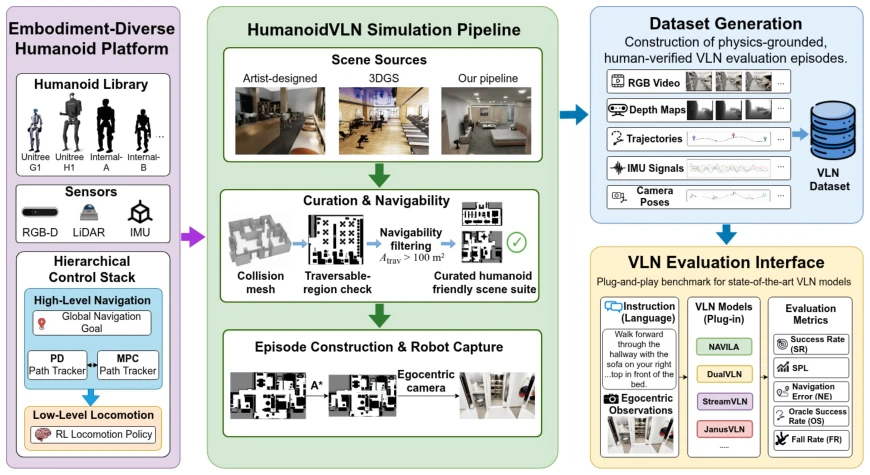
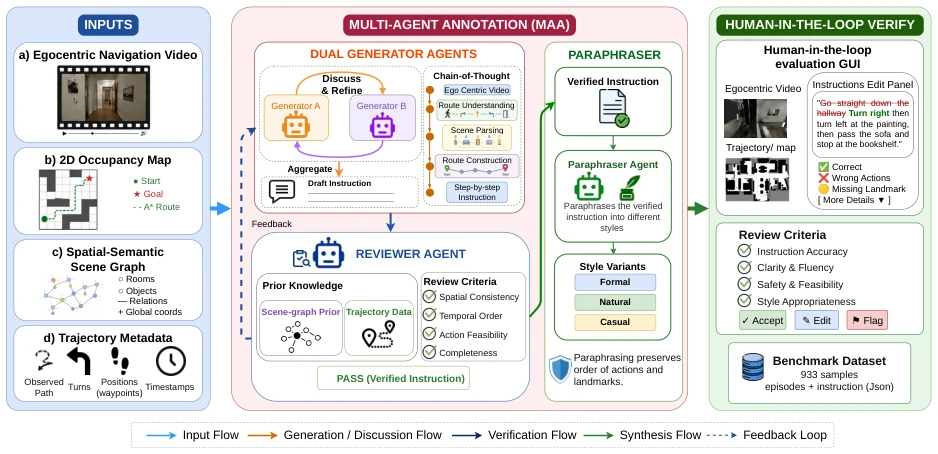
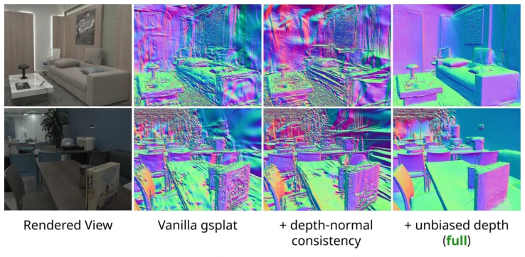
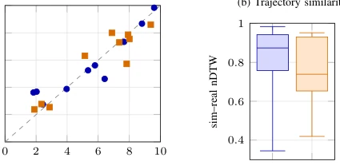
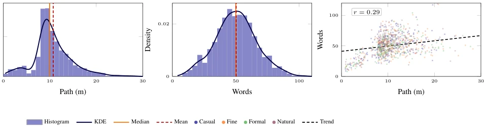

This paper finally pulls embodied navigation back from "teleport simulators" to the "physical world". Robots in previous benchmarks (such as R2R [3], RxR [17]) teleported through walls like ghosts, while HumanoidVLN uses Isaac Sim and hierarchical control to enable bipedal robots to truly walk. 3DGS scene reconstruction is a highlight, saving costs on art modeling. However, a critique is: 87 scenes are still too few for the "large model" era, and manually annotating 933 instructions is too costly and difficult to scale. Most ironically, for high-end robots like Unitree H1, fall rates reach up to 70% under certain models, indicating a huge physical gap between "being able to walk" and "being able to navigate". Although JanusVLN won, generalization under physical constraints still needs verification. This is not only a navigation benchmark but also a touchstone for humanoid robot control capabilities, reminding us not to be too comfortable in simulation.
Existing embodied navigation benchmarks (such as R2R [3], RxR [17]) are mostly based on Habitat [10] or Matterport3D [5], robot motion adopts kinematic teleportation, ignoring physical constraints of bipedal walking (such as center of mass, gait stability). This results in a huge sim-to-real gap, because real humanoid robots are limited by lower limb degrees of freedom (10-12 DoF) and height differences [1], [2]. Different morphologies (such as Unitree G1 vs H1) directly affect gait reachability and CoM dynamics. Additionally, existing scenes lack navigability filtering, making small spaces infeasible for bipedal robots. Regarding instruction generation, pure VLM auto-annotation easily produces spatial hallucinations [9], while manual annotation costs are too high. Therefore, it is necessary to construct a humanoid robot VLN benchmark with physical deployment, navigable scenes, and trustworthy instructions.
方法Method
整体流程基于NVIDIA Isaac Sim构建，旨在解决物理落地问题。控制层采用分层架构：底层RL策略生成稳定步态，上层PD或MPC控制器将导航计划转为速度参考，确保物理可执行。场景构建上，结合艺术家设计与3D Gaussian Splatting (3DGS) 重建，通过TSDF融合生成碰撞网格，并筛选可导航面积>100m²的区域。数据标注采用多智能体系统（MAA）：两个生成器独立构建路径图，审查者结合场景图验证，最后经人工修正并生成三种风格指令。评估接口标准化，支持NaVILA、JanusVLN等模型零样本测试，记录RGB、深度、IMU及摔倒率。具体而言，MAA利用Qwen、Gemma等LLM进行多轮生成与审查，确保指令与轨迹一致。场景过滤通过A*路径规划验证连通性。
The overall process is built based on NVIDIA Isaac Sim, aiming to solve the physical deployment problem. The control layer adopts a hierarchical architecture: the bottom RL policy generates stable gaits, the upper PD or MPC controller converts navigation plans into velocity references, ensuring physical executability. In scene construction, combining artist design and 3D Gaussian Splatting (3DGS) reconstruction, collision meshes are generated via TSDF fusion, and areas with navigable area >100m² are filtered. Data annotation adopts a Multi-Agent System (MAA): two generators independently build path graphs, reviewers verify combined with scene graphs, finally corrected by humans and generate three styles of instructions. Evaluation interface is standardized, supporting zero-shot testing for models like NaVILA, JanusVLN, recording RGB, depth, IMU, and fall rates. Specifically, MAA utilizes LLMs such as Qwen, Gemma for multi-turn generation and review, ensuring instruction and trajectory consistency. Scene filtering verifies connectivity through A* path planning.

Fig. 1: Overview of the HumanoidVLN physics-grounded benchmark pipeline, from embodiment-diverse humanoid platforms and hierarchical control to scene curation, episode construction, multimodal dataset generation, and plug-and- play VLN evaluation.

Fig. 2: The proposed Multi-Agent Annotation (MAA) framework. Two generator agents independently derive a route graph from the egocentric keyframe sequence alone; their graphs are reconciled, and residual contradictions are forwarded to a reviewer agent that verifies against scene-graph, trajectory, and occupancy priors. The verified instruction is paraphrased into three stylistic variants and corrected by human annotators to produce the benchmark dataset.
Zero-shot evaluation was conducted on 4 types of humanoid robots (Unitree G1/H1, etc.) and 4 VLN models. JanusVLN performed best (SR 43.55%), but Unitree H1 had extremely high fall rates (up to 70% in some models), showing morphology impact is significant. Sim-to-real pilot (DualVLN + G1) shows navigation error strong correlation (r=0.935), proving reconstructed scenes are credible. Ablation experiments show 3DGS depth-normal consistency optimization can improve collision mesh quality. The dataset contains 933 instructions, median path length 9.97 meters. Additionally, SPL and nDTW metrics are reported to comprehensively evaluate path fidelity and task success rate.

Fig. 4: Qualitative geometry ablation of our 3DGS reconstruction pipeline. We visualize surface normals for two indoor scenes. Vanilla gsplat produces noisy, discontinuous normals. Adding depth-normal consistency improves local smoothness, while our full pipeline with unbiased depth yields the most coherent geometry.

Fig. 5: Real-world validation at the episode level (N = 20 paired episodes over two scenes). (a) Per-episode navigation error in simulation versus reality (dashed: y = x); the two are strongly correlated (r = 0.935). (b) Distribution of nDTW between each paired simulated and real trajectory, grouped by scene.

Fig. 6: Path and instruction statistics for HumanoidVLN (n = 933). (a–b) Path- and instruction-length distributions. (c) Path versus instruction length across four styles (r = 0.29).